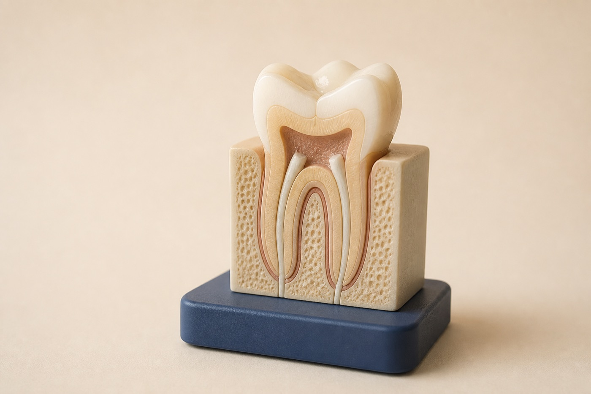

Numb & isolate
Make the tooth comfortable and keep the treatment field clean.
Root canal treatment in Renton, WA
Root canal treatment removes inflamed or infected tissue from inside a tooth, disinfects the space, and seals it so the tooth can remain in function.

Your treatment path
We keep you informed from diagnosis through the final restoration.
Make the tooth comfortable and keep the treatment field clean.
Remove inflamed tissue and disinfect the internal canals.
Fill the cleaned spaces to reduce reinfection risk.
Restore the tooth with the filling or crown it needs.
Facial swelling, fever, difficulty breathing, or difficulty swallowing can be urgent medical concerns. Seek immediate medical help when breathing or swallowing is affected.
Signs to evaluate
Not every toothache needs a root canal. We identify the source, assess whether the tooth can be predictably restored, and explain alternatives before treatment.
Heat or cold pain that continues after the stimulus is gone can signal pulp inflammation.
A damaged or infected tooth may feel tender under pressure.
Drainage, swelling, or a pimple-like spot may indicate infection around a root.
What we evaluate
A root canal only makes sense when the remaining tooth has a reasonable long-term restorative outlook.
Root canal FAQ
Persistent pain, lingering temperature sensitivity, pain when biting, swelling, or a gum bump can be signs, but an exam and imaging are needed for diagnosis.
The tooth is numbed for treatment. The goal is to remove inflamed or infected tissue that is often causing the discomfort.
Back teeth and teeth with significant structure loss commonly need crowns. The recommendation depends on tooth location and remaining strength.
Antibiotics may help some spreading infections, but they do not remove infected tissue inside the tooth. Definitive dental treatment is usually still needed.
Call SmileVibe in Renton so the team can help determine the right level of urgency.